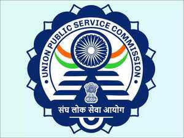

Civil Services Exam
Dates:
2024
Registration: 14 Feb–5 Mar 2024
Preliminary Exam: 26 May 2024
Mains Exam: 20 Sept 2024
Exam dates may change. There may be optional or additional dates. Check the official website.
Syllabus:
Preliminary Exam
General studies-Paper-I (marks:200)
General studies-Paper-II (marks:200)
Mains Exam Syllabus:
Mathematics-I & II, Physics, Chemistry and Hindi are compulsory for all candidates.
Other subjects can be chosen as per the candidate’s interest from any of the following
Mathematics and Statistics-Chapter I & II, III&IV (marks:80)
English Language-Part A (marks:70)
General Studies-Chapter III (marks:90)
For more details about the syllabus visit www.cses.gov.in
or contact CSENET at +91-11-23952999